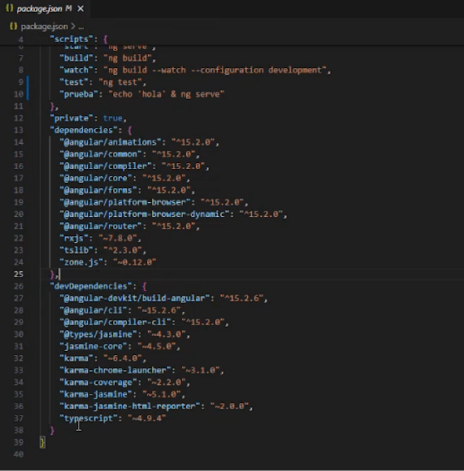
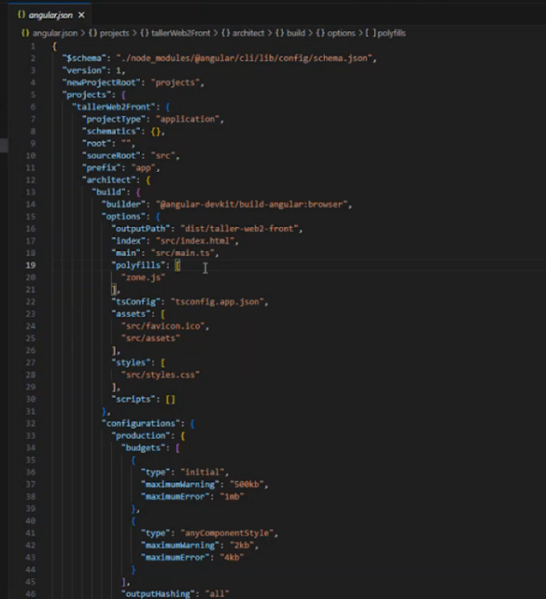

Clase 1
Angular es un framework para desarrollar aplicaciones SPA(Single Page Applications), de código abierto, mantenido por Google.
Binding:Lo que enlaza una cosa con la otra.
Comandos:
npm install -g @angular/cli ->Instalar localmente Angular
ng new my-app ->Inicialización de una aplicación
npm run build ->genera los archivos vendor.js, polyfills.js, main.js, runtime.js y styles.css. Genera el paquete entregable para que cualquiera lo pueda usar.
npm run start ->Inicializa la aplicación en entorno local en la dirección http://localhost:4200/
- package.json
- En el se definen las referencias a los paquetes y dependencias que utilizara la aplicación.
- También define una serie de scripts que pueden ser lanzadores rápidos de procesos que el desarrollador necesite correr durante la construcción.
- tsconfig.json
- Archivo de configuración de TypeScript, en el se detallan las opciones básicas del compilador de TypeScript.
- angular.json
- Archivo de configuración de Angular con referencias globales que luego las utiliza tanto en tiempo de compilación como de ejecución.
- Index.html
- Punto de entrada a la aplicación.
- main.ts
- Cargador principal de la aplicación. Deja disponible todos los componentes y funcionalidades que nos brinda el framework de trabajo.
package.json
dependencies serían las librerías que necesito para compilar mi aplicación y devDependencies son las librerías que necesito para desarrollar.
angular.json
Tiene las configuraciones por defecto de angular. “dist/…” es la ruta de compilación de mi proyecto. También establece los assets, estilos, etc.